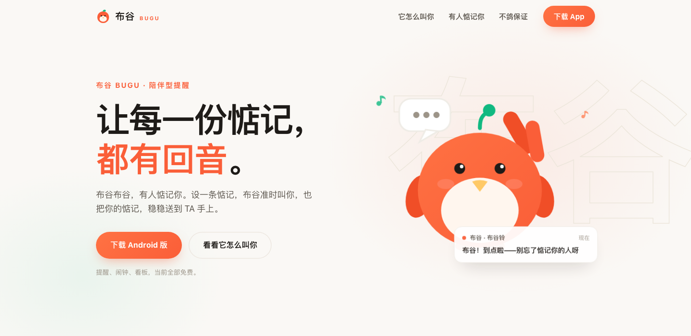
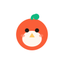
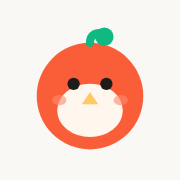
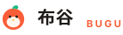
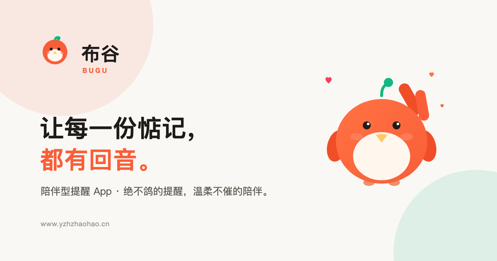

布谷BUGU
原站点母版重建 · 各端演变方案
以线上官网 www.yzhzhaohao.cn 的实际视觉为母版，重新推导 App / 官网 / 后台 / OG 的全部资产。左侧一律是线上实际文件的原样渲染，右侧是新推导结果，同尺寸并排。所有偏离都在第 04 节逐条说明原因与幅度。
取证时间 2026-11-09 08:18 UTC · 本次只产出资产与预览，未改动 app / website / admin 任何代码。
00
母版来自哪里
| 来源 | 线上实测 | 拿到什么 |
|---|---|---|
/favicon.svg |
HTTP 200 · image/svg+xml · 634 BLast-Modified: Thu, 05 Nov 2026 06:57:04 GMT sha256 9d3ec492…15a3e |
9 个图元：身体圆 / 肚皮椭圆 / 双眼 / 琥珀嘴 / 绿芽茎 + 叶 / 两片腮红 |
| 页头内联 SVG | 从线上入口 main-nhJm5Cdq.js 提取 |
与 favicon 同构，仅少了腮红；显示尺寸 30×30 |
| 首页大咕咕插画 | GuguBird-CHtEEqb9.js · viewBox 260×250 |
身体渐变、翅膀、尾羽、脚、眼高光、腮红、绿芽；作为“造型语言”的完整原型，本次不修改 |
| 站点色板 | style.css 的 CSS 变量 |
本次所有色值只取自此表，未新增任何颜色 |

线上官网现状（1440×700，2026-11-09 截）— 页头 30px 图标 + 右侧大咕咕
线上
favicon.svg 原样渲染（240px）01
原站点设计语言的构成
母版
gugu-site-master.svg · viewBox 0 0 64 64 · 634 B整体构成
一个正圆身体 + 一个椭圆肚皮 + 五处面部/嫩芽细节。没有任何描边，全部为纯色填充（只有绿芽茎是一条圆头描边）。
身体
circle cx32 cy36 r26 → 视觉直径 52/64，占画布 81%。位置略低于几何中心（36 > 32），留出头顶给嫩芽。肚皮
ellipse cx32 cy43 rx16 ry13 → 32×26，横向椭圆，底部贴住身体下缘，形成“露肚”的憨态。眼睛
两个
r3 实心圆，位于 (24,30) / (40,30)；间距 16，正好是圆的 2.7 倍直径。没有眼白、没有高光（高光只出现在首页大插画里）。嘴
琥珀色朝上的三角：
M32 34 L28 40 L36 40 Z，宽 8 高 6，顶点朝上、贴着两眼之间下方。这是本设计语言里最容易在缩小后丢失的元素。嫩芽
茎：
M32 10 C32 6 36 4 38 6，4px 圆头描边，向右上弯约 35°；叶：circle cx39 cy7 r4.5。茎从身体顶部切线处生出，叶在茎末端右上。绿色是品牌的一部分，全端保留。腮红
两片
rx3.5 ry2.5、#FF8A70、opacity .6，位于 (17,38)/(47,38)。仅在 favicon 与插画里出现，页头版本没有。线宽
全图只有一处描边（嫩芽茎 4/64 = 6.25%）；其余靠色块分界。没有外轮廓描边——这是“果冻感”的来源。
本次允许使用的颜色（全部来自线上站点）
✓
没有新增任何颜色。本页右侧所有资产只使用上面 9 个色值；没有描边、没有阴影、没有渐变（OG 卡里的大咕咕沿用线上原有的
#FF7243→#FA5E38 渐变）。02
缩小实测：原样 vs 光学修正
先把线上原文件按真实像素渲染，再给只动“尺寸相关比例”的修正版。左＝线上原样，右＝修正版，两侧都是实际像素，只是放大 8 倍便于肉眼判断。
线上原样（favicon.svg 直接缩）
16px
24px
32px
48px
64px
16px 实测：眼睛被压成 1px 深色点；琥珀嘴与肚皮对比度仅 约 1.4:1（#FFC966 对 #FFF6EE，WCAG 相对亮度），完全消失；腮红不可见；绿芽可辨但茎细到 1px。
新推导（光学修正版）
16px
24px
32px
48px
64px
16px 修正：眼睛 r3→4.3、上移 0.6；嫩芽茎 4→5.5、叶 r4.5→6、叶心上移 0.6；去腮红、去琥珀嘴。24 / 32 只做幅度更小的同类调整，嘴与腮红保留。
| 尺寸 | 眼睛 r | 嘴 | 嫩芽茎 / 叶 | 腮红 | 判定 |
|---|---|---|---|---|---|
| 母版 64 | 3（原样） | 8×6 原样 | 4 / 4.5 原样 | 保留 | 完全原样 |
| 48 | 3（原样） | 原样 | 原样 | 保留 | 直接用母版 |
| 32 | 3.3（+10%） | 9×6.6（+12%） | 4.2 / 4.7（+5%） | 保留 | 轻微 |
| 24 | 3.6（+20%） | 10×7.5（+25%） | 4.6 / 5.0（+15%） | 去掉 | 中度 |
| 16 | 4.3（+43%） | 去掉 | 5.5 / 6.0（+38%） | 去掉 | 必须偏离 |
03
各端资产
App 桌面图标 · adaptive


108 全画布 + 安全区
圆形遮罩
圆角方形遮罩
主题图标（单色层·靛）
主题图标（单色层·绿）
512 商店图
ⓘ
前景把 64 视图按
66/64 放进 108 画布的 21–87 安全区；背景取站点画布色 #FAF8F5。单色层用同一条 path 的 evenOdd 负形做眼睛和嘴，系统染成主题色时仍是“布谷脸”而不是一块色块。通知栏 24dp 剪影
9:415G ▮▮
白色透明底，系统自动染色；深色/浅色通知栏都是同一份文件
官网 favicon 全套

32
48

512
布谷 BUGU — 让每一份惦记，都有回音×浏览器标签实际观感（16px = 光学版原尺寸）
页头横版 logo

图形 30px 与线上一致；「布谷」20px/800、「BUGU」11px/700/字距 .22em/主色 — 全部沿用线上 CSS
后台 logo
浅色侧栏 · 主题色
深色侧栏 · 白
单色
currentColor 剪影，跟随后台主题色；眼睛与嘴是负形孔OG / 分享卡 1200×630

大咕咕插画原样复用（不改它的造型与配色），文字沿用官网现有文案
04
每一处偏离，以及为什么必须
| 位置 | 偏离内容 | 为什么必须偏离 | 偏离多少 |
|---|---|---|---|
| 16px favicon | 去掉琥珀嘴 | #FFC966 与肚皮 #FFF6EE 的对比度只有 约 1.4:1；在 16px 下嘴只有约 2×1.5px，渲染后不是“嘴”，是一团让肚皮发脏的抗锯齿。这是细节取舍，不是改造型。 | 1 个图元（嘴） 色彩/形状不变 |
| 16px favicon | 去腮红 | 腮红 3.5×2.5 在 16px 下只剩 0.9×0.6px、且只有 60% 不透明度，必然糊成脏点。 | 2 个图元 （肉眼原本已不可见） |
| 16px favicon | 眼睛 r3 → 4.3（+43%），上移 0.6 | 原样只有 1.5px 直径，缩完只剩 1 个深灰点，两只眼会粘成一条。必须放大到 ≥2px 才能读成“两只眼睛”。 | 直径 +1.5 单位 ≈ +0.4px |
| 16 / 24px | 嫩芽茎 4 → 5.5 / 4.6，叶 4.5 → 6 / 5 | 茎在 16px 下只有 1px，圆头会被像素吃掉，绿芽会和身体脱开变成“漂浮的绿点”。加粗到 ≥1.4px 才能保持茎叶相连。 | 茎 +38% / +15% 叶半径 +33% / +11% |
| 24px | 去腮红 | 24px 下腮红只有 1.3×0.9px，且在通知栏 24dp 会被系统着色为单色，本来就不呈现。 | 2 个图元 |
| 24 / 32px | 嘴 8×6 → 10×7.5 / 9×6.6 | 嘴是这套语言里最易丢失的元素；在 24px 时原样只有 3×2.25px，需要放大 25% 才勉强读成“嘴”。颜色不换，所以只能靠面积补。 | 面积 +56% / +24% |
| App adaptive 前景 | 整体从 64 缩到 66/108 并居中 | Android 遮罩会裁掉外圈 18dp；不放进安全区，头顶的嫩芽会被圆形遮罩切掉。 | 等比 1.03× 位置居中 |
| App 背景 | 新增纯色底 #FAF8F5 | adaptive 必须有不透明背景层；取站点画布色，不是新颜色。 | 0（既有色） |
| 通知栏 / 单色层 | 合并为单色剪影，眼睛与嘴变成负形孔 | 系统只允许一个不透明度蒙版；彩色版在通知栏会被强制染色成一团。负形孔能保住“布谷脸”。 | 0（几何不变） |
| admin logo | 单色 currentColor |
后台侧栏是单色图标体系，彩色图标会破坏与其它菜单项的视觉一致。 | 0（几何不变） |
!
没有动的部分：颜色 0 处改动；造型语言 0 处改动（圆身、横椭圆肚皮、圆眼、朝上三角嘴、右弯绿芽、位置关系全部保留）；首页大咕咕插画 0 处改动，仅原样复用进 OG 卡。